La Ciudad

"Cada calle recuerda aquello que sus habitantes intentan olvidar."
Selkaron, una de las cuatro ciudades más importantes del reino y la encargada de custodiar no solo las tierras del este, sino el paso fronterizo con el resto del continente, convirtiéndola así en una de las mayores fuerzas militares que pueden encontrarse en Vhaldyr.
Es una de las ciudades más prosperas, no solo por la enorme protección que ofrecen sus ejércitos, sino por todos los materiales que proporcionan aquellas tierras bajo su cuidado. La comida nunca escasea, las nuevas modas se originan en ella y, debido a que es la encargada principal de sustentar alimento al resto del territorio, el resto de regiones siempre la ponen como prioridad en sus ventas de recursos

Historia de la ciudad
Si bien en la actualidad se trata de una de las ciudades más importantes del reino, no siempre fue así. Durante largos años, las tierras ahora prósperas y rebosantes de vida poseían una clara carencia de estas, siendo prácticamente una tierra muerta donde nadie quería asentarse. Grandes discusiones se dieron alrededor de quienes poblarían aquellas tierras inóspitas, puesto que tras una guerra tan sangrienta, perderlas y dejarlas en manos del resto del continente no era una opción.
Durante décadas, los habitantes de Selkaron lucharon por transformarlas en un lugar habitable y próspero. La gente moría por enfermedad o hambre y, durante un tiempo, comenzó a plantearse el olvidar unas tierras que solo traían desgracia y sufrimiento, puesto que nada parecía hacer que pudieran tener utilidad alguna.
Casi un siglo transcurrió entre intentos, enfrentamientos y propuestas fallidas. Se probaron distintas formas de trabajar la tierra, modificar sus condiciones y aprovechar aquello que el territorio ofrecía, pero ninguna consiguió cambiar su naturaleza. Cada generación heredaba el mismo problema que la anterior y, con él, la discusión sobre si continuar luchando por aquellas tierras o abandonarlas definitivamente. Fue entonces cuando apareció un extranjero.
Nadie recuerda su nombre. De su procedencia únicamente ha sobrevivido una certeza: decía provenir del norte, más allá de las fronteras de Vhaldyr. Nadie ha conseguido determinar de qué territorio del continente procedía realmente, ni qué motivos lo llevaron hasta aquellas tierras. Tampoco existen retratos o descripciones fiables de su aspecto. Jamás permitió que se le representara y, con el paso de los siglos, incluso se perdió la certeza sobre si se trataba de un hombre o una mujer, joven o anciano. Lo único que se conserva de su llegada es su promesa: sabía cómo devolver la vida a aquellas tierras. Y, contra todo pronóstico, funcionó.
Poco a poco, el suelo comenzó a cambiar. Allí donde durante generaciones nada había conseguido arraigar, aparecieron los primeros signos de fertilidad. Los cultivos prosperaron, la vegetación comenzó a extenderse y aquello que había sido considerado una tierra condenada empezó a convertirse en una de las regiones más productivas de Vhaldyr. El extranjero no permaneció para contemplar el resultado.
De la misma manera en que había aparecido, desapareció. No dejó pertenencias, escritos ni una explicación que permitiera comprender qué había hecho. Solo quedaron las tierras fértiles y una pregunta que, con el paso del tiempo, nadie ha conseguido responder.
Durante mucho tiempo, aquella transformación fue considerada un acontecimiento extraordinario, casi imposible de explicar. No como un regalo de los cielos, pues en Vhaldyr jamás existió una creencia semejante a un dios que pudiera otorgarlo, sino como un acontecimiento cuya causa escapaba al conocimiento de quienes lo presenciaron. Pero la prosperidad tuvo un precio. Poco después de la desaparición del extranjero, la Luna Carmesí apareció por primera vez.
Distritos
Selkaron se encuentra dividida en varios distritos que reflejan las diferencias sociales, económicas y funcionales de la ciudad. La posición de cada uno no responde únicamente a criterios urbanísticos: la proximidad a las murallas, la seguridad, el acceso al comercio y la cercanía a la Luminaria determinan también quién puede permitirse vivir en cada zona.
A medida que se avanza desde las puertas del sur hacia el corazón de la ciudad, el paisaje urbano cambia progresivamente. Las viviendas humildes y los barracones militares dan paso a comercios, residencias familiares y zonas de ocio, hasta alcanzar las áreas más acomodadas y, finalmente, la Luminaria, donde se concentra la élite de Selkaron.
- Suburbios. Los primeros barrios que encuentra quien entra en Selkaron por el sur. Las viviendas son pequeñas, antiguas y construidas aprovechando hasta el último espacio disponible, con una población que sobrevive con recursos limitados. Su ubicación junto a las murallas responde a una cuestión tan práctica como cruel: en caso de invasión, serían los primeros en quedar expuestos al enemigo.
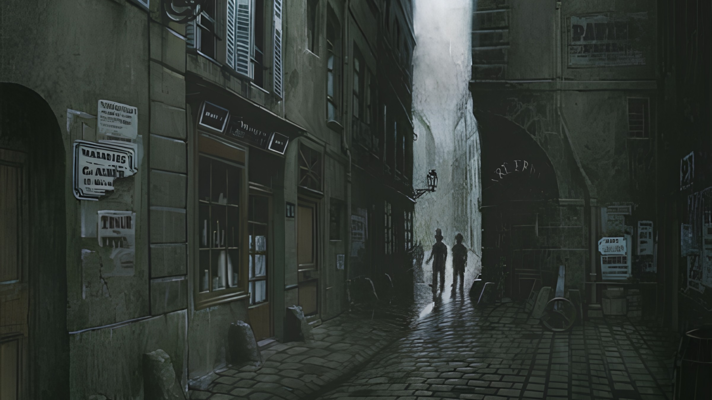
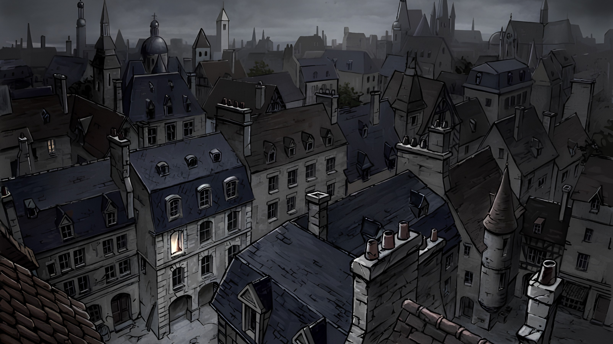
- Distrito militar. Situado inmediatamente después de los suburbios, el distrito militar alberga a buena parte de las fuerzas encargadas de proteger Selkaron. Desde aquí se coordinan la vigilancia de las murallas, la seguridad interior y la respuesta ante posibles amenazas. Su posición entre los barrios más humildes y el resto de la ciudad no es casual: funciona también como una primera línea de contención en caso de conflicto.
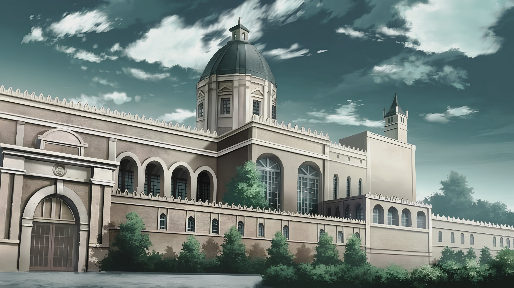
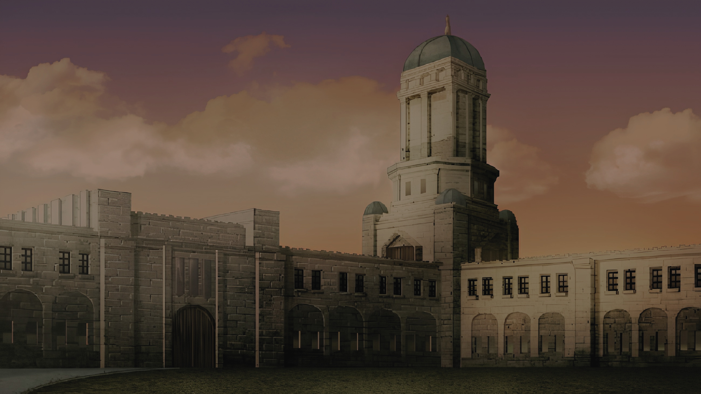
- Distrito comercial. Uno de los principales núcleos comerciales de Selkaron y el más importante para el abastecimiento cotidiano de la ciudad. Sus establecimientos proporcionan alimentos, productos básicos y tejidos de calidad modesta, convirtiéndolo en una zona de tránsito constante. Aunque no posee el prestigio de los comercios de la Luminaria, constituye uno de los puntos fundamentales para la economía diaria de Selkaron.
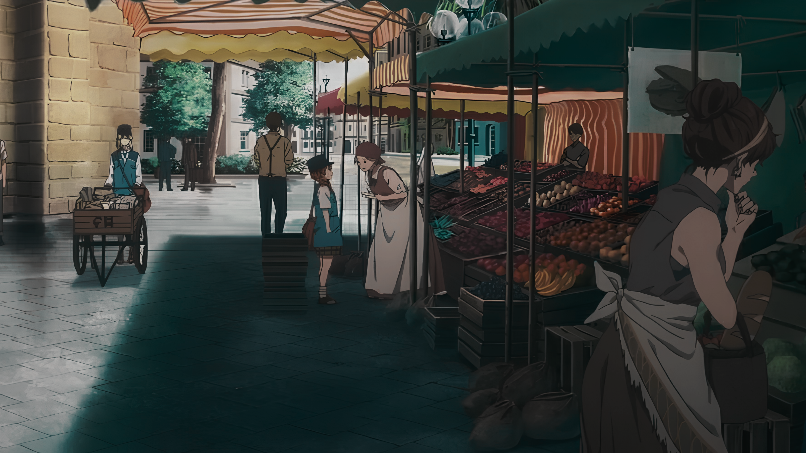
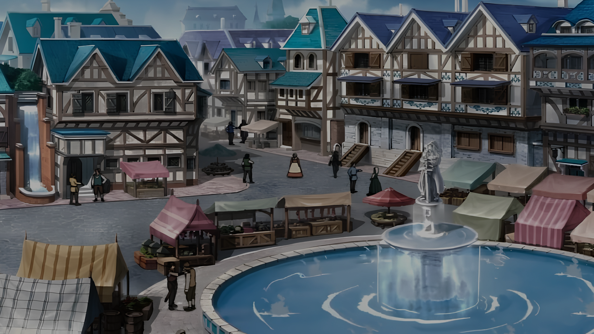
- Distrito residencial bajo. Zona habitada principalmente por familias de recursos modestos pero estables. Sus viviendas, aunque antiguas, se conservan adecuadamente y ofrecen espacio suficiente para familias pequeñas que pueden permitirse cierta comodidad sin grandes lujos. Entre las residencias se encuentran pequeñas plazas y zonas verdes destinadas especialmente al descanso y al juego de los más pequeños.
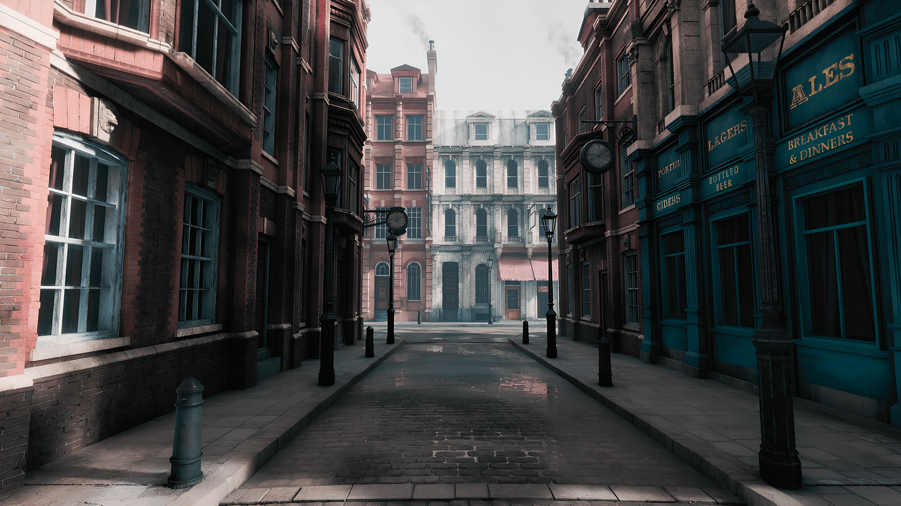
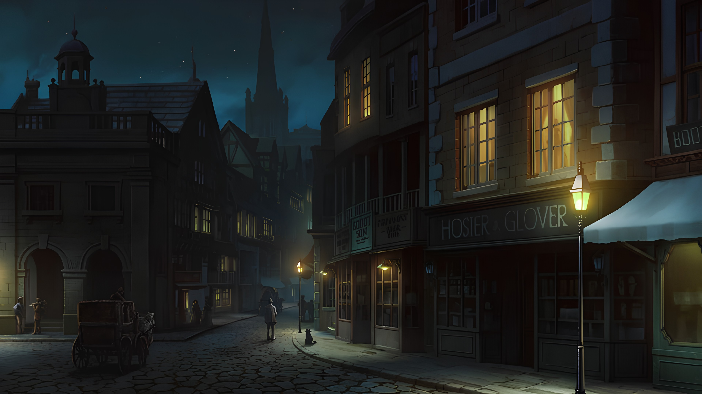
- Distrito residencial medio. El nivel de vida aumenta progresivamente en esta zona. Sus viviendas son más amplias y permiten alojar cómodamente a familias de varios miembros, aunque continúan alejadas de los lujos propios de las zonas nobles. Es uno de los sectores más tranquilos de Selkaron y sirve como transición entre los barrios residenciales más modestos y las zonas acomodadas.
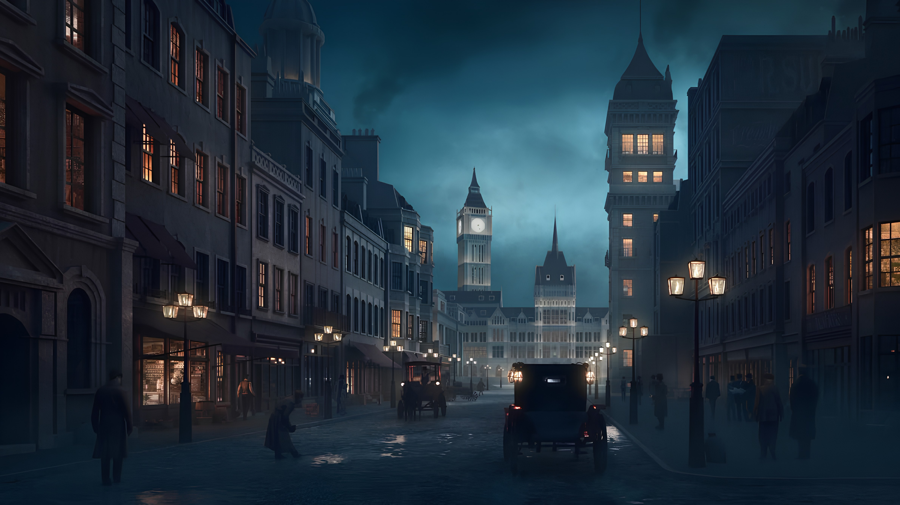
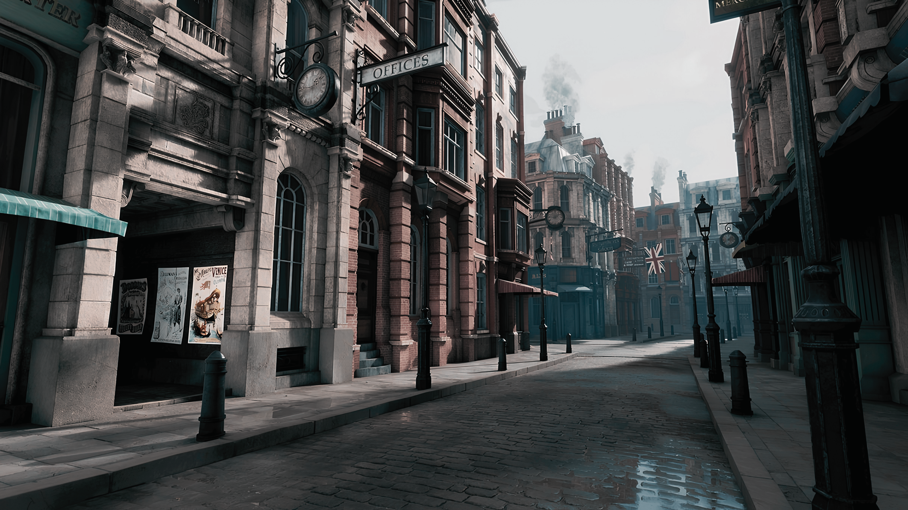
- Distrito residencial alto. Las viviendas más grandes de Selkaron fuera de la Luminaria se encuentran aquí. El distrito está ocupado principalmente por comerciantes reconocidos, propietarios y familias cuya posición económica les permite disfrutar de determinados lujos. Aunque no forman parte de la nobleza, sus habitantes poseen suficiente poder adquisitivo para acceder ocasionalmente a los establecimientos de la Luminaria y participar en la vida social de las clases superiores.
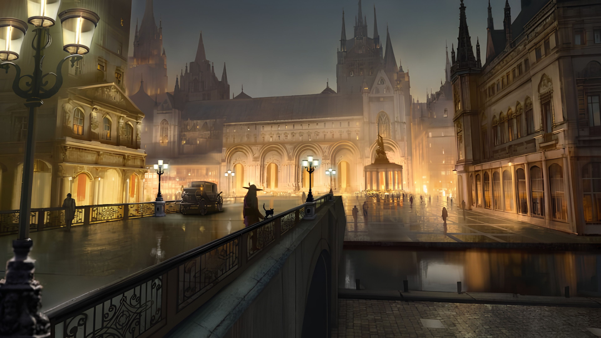
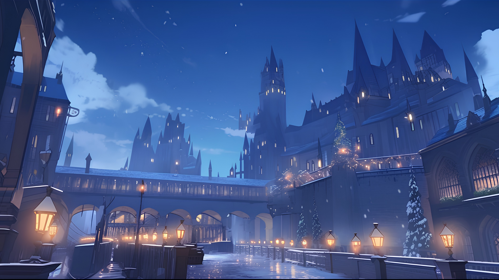
- Distrito del ocio. El corazón recreativo de Selkaron. Sus calles reúnen tiendas de juguetes, establecimientos de moda, cafeterías y clubes destinados principalmente a las clases acomodadas. Es también uno de los lugares donde las tendencias de la capital llegan con mayor rapidez, aunque sus productos y establecimientos no alcanzan la calidad de los negocios de la Luminaria.
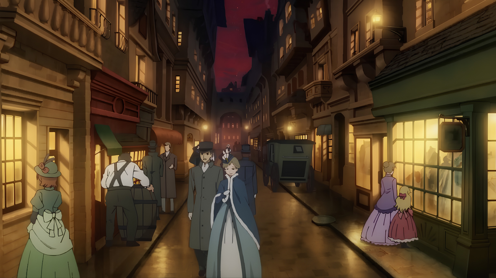
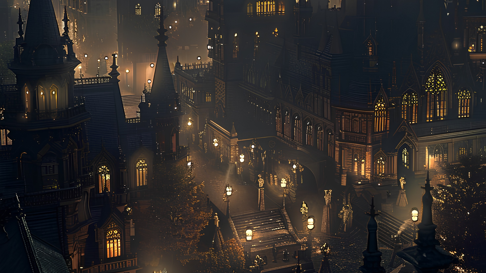
- La Luminaria. El distrito más prestigioso de Selkaron y residencia de sus familias nobles más importantes. Sus mansiones se extienden por la parte septentrional de la ciudad y destacan incluso desde el exterior gracias a la abundancia de iluminación que caracteriza la zona. En su ladera meridional, única parte del monte acondicionada para el tránsito, se concentran los establecimientos de mayor categoría y el Palacete, residencia oficial de la familia real durante sus estancias en la ciudad.
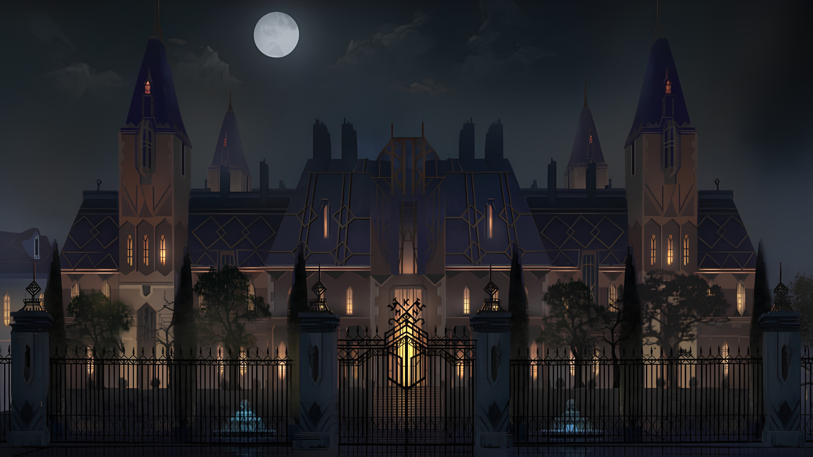
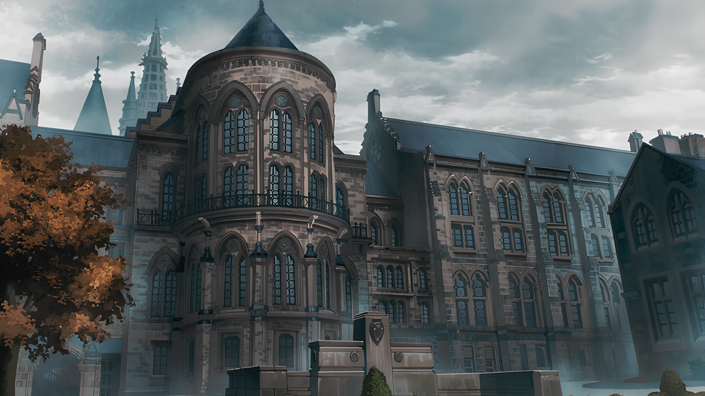
Arquitectura
La arquitectura de Selkaron refleja las diferencias sociales de la ciudad. En los suburbios predominan construcciones pequeñas y funcionales, levantadas en ladrillo, piedra sencilla o materiales reutilizados, con fachadas prácticamente desprovistas de ornamentación. A medida que aumenta el nivel económico, las viviendas incorporan mejores materiales, mayores dimensiones y elementos decorativos que permiten distinguir progresivamente la posición de sus habitantes.
Las zonas residenciales de clase media comienzan a mostrar fachadas más cuidadas, grandes ventanales, molduras, madera trabajada y pequeños jardines o espacios privados. En los sectores más acomodados aparecen piedra tallada, hierro ornamental, vidrieras y una arquitectura más elaborada, convirtiendo las propias viviendas en una muestra visible de prosperidad.
La Luminaria representa el máximo exponente de esta evolución. Sus mansiones y establecimientos destacan por el empleo de materiales de alta calidad, fachadas ornamentadas, grandes ventanales y una iluminación abundante que hace que el distrito sea visible incluso desde la distancia. Los comercios de mayor prestigio siguen una estética igualmente refinada, utilizando escaparates, vidrieras y detalles cuidadosamente diseñados para transmitir exclusividad.
Los edificios destinados a funciones específicas presentan, en cambio, una arquitectura adaptada a su propósito. Los cuarteles y construcciones militares priorizan la solidez, empleando piedra, ladrillo y estructuras robustas con escasa ornamentación, mientras que los edificios comerciales buscan llamar la atención mediante fachadas elegantes y elaboradas. De este modo, recorrer Selkaron supone atravesar una transformación gradual en materiales, decoración y arquitectura que refleja las diferencias entre sus habitantes.
Lugares importantes
Selkaron alberga lugares que se han convertido en puntos esenciales de su vida social, política y criminal. Algunos son espacios de reunión y prestigio, mientras que otros permanecen al margen de la ciudad y sobreviven gracias a quienes prefieren operar lejos de la mirada de las autoridades.
El Palacete constituye uno de los principales centros de la vida aristocrática de Selkaron. Los acontecimientos celebrados en su interior pueden convertirse en el tema de conversación de toda la ciudad durante semanas. Sin embargo, cuando permanece vacío, sus alrededores adquieren una reputación mucho más inquietante: durante años se han registrado desapariciones en sus inmediaciones y, recientemente, incluso se han encontrado cadáveres en la zona.
Los clubes nocturnos, surgidos durante los últimos cinco años, ofrecen un nuevo espacio de reunión para las clases altas. A diferencia de los tradicionales clubes de caballeros, permiten la entrada de hombres y mujeres por igual y se presentan como lugares destinados al ocio y la compañía. No obstante, su privacidad también los ha convertido en un escenario habitual para encuentros clandestinos entre amantes. Se concentran principalmente en la periferia de los suburbios orientales.
El mercado negro carece de una ubicación permanente. Sus integrantes se desplazan constantemente para evitar a las fuerzas militares y aprovechar los puntos donde la vigilancia es menor, aunque los suburbios y barrios de menor nivel económico constituyen sus principales zonas de actividad. Allí circulan mercancías y servicios que difícilmente encontrarían cabida en los mercados legítimos de Selkaron.
Vida nocturna
Cuando cae la noche, Selkaron adopta una rutina muy distinta a la que mantiene durante el día. Las calles se vacían progresivamente y, salvo aquellos que tienen un motivo para permanecer fuera, la mayoría de sus habitantes prefiere refugiarse tras las puertas de sus hogares. Esta costumbre se ha vuelto todavía más estricta durante los últimos años, coincidiendo con el aumento de la criminalidad en la ciudad. Aun así, no todos están dispuestos a renunciar a las horas nocturnas.
La recomendación general es sencilla: permanecer en casa durante la noche. La mayoría de los ciudadanos respeta esta norma no escrita, especialmente en los barrios de menor seguridad. Sin embargo, siempre existen quienes consideran exageradas las advertencias o quienes, por necesidad, se ven obligados a ignorarlas. Para ellos, las calles nocturnas de Selkaron ofrecen una ciudad muy distinta a la que conocen durante el día.
Los clubes nocturnos, burdeles y otros establecimientos destinados al ocio concentran buena parte de la actividad nocturna de la ciudad. Quienes frecuentan estos lugares suelen aprovechar las noches en las que la presencia militar aumenta, especialmente durante los fines de semana, cuando las calles cuentan con una vigilancia considerablemente mayor. Aun así, abandonar uno de estos establecimientos y regresar a casa sigue siendo una decisión que muchos prefieren no tomar demasiado tarde.
Existen noches en las que incluso los más despreocupados prefieren no abandonar sus hogares. Cuando la niebla se apodera de Selkaron, la ciudad queda sumergida en una espesa nube que reduce la visibilidad a apenas unos pasos y convierte calles conocidas en lugares irreconocibles. En ocasiones, las circunstancias obligan a algunos habitantes a salir pese a todo. De quienes se aventuran en esas noches, sin embargo, no siempre vuelve a saberse algo.
Pero existe una noche ante la que incluso los más escépticos cierran sus puertas. Cuando la Luna Carmesí ocupa el cielo, las calles de Selkaron quedan completamente desiertas. Nadie que no se considere un héroe, un insensato o ambas cosas está dispuesto a poner un pie en el exterior. Nadie sabe con certeza qué puede provocar su maldición, pero pocos están dispuestos a descubrirlo por sí mismos.
Transporte y tecnología
El transporte en Vhaldyr está estrechamente ligado a la posición económica de sus habitantes. La mayor parte de la población se desplaza a pie, recurriendo ocasionalmente al alquiler de caballos para trayectos más largos. La nobleza, en cambio, dispone principalmente de lujosos carruajes privados. Hace poco más de cinco años comenzó a popularizarse la bicicleta, todavía considerada una adquisición costosa, aunque accesible para aquellas familias capaces de ahorrar durante un tiempo.
La tecnología del reino continúa siendo bastante rudimentaria y los avances más recientes apenas comienzan a incorporarse a la vida cotidiana. La electricidad es uno de ellos, aunque su elevado coste limita su presencia a las zonas más acomodadas, especialmente La Luminaria. El resto de la ciudad continúa dependiendo de sistemas tradicionales de iluminación, como el gas, el aceite y las velas.
En las minas del norte existe también un sistema primitivo de raíles y vagonetas, utilizado exclusivamente para transportar minerales y materiales pesados. No existe todavía una red ferroviaria que conecte las ciudades de Vhaldyr. Del mismo modo, el automóvil continúa siendo un proyecto en desarrollo, impulsado por el deseo de crear un medio de transporte que no dependa de animales ni del esfuerzo físico de sus pasajeros.
En cuanto a la comunicación, la sociedad continúa dependiendo de métodos tradicionales. Las cartas siguen siendo el principal medio para transmitir mensajes a larga distancia, y no existen sistemas capaces de ofrecer una comunicación inmediata. La tecnología de Vhaldyr avanza, pero lo hace lentamente, manteniendo una sociedad todavía profundamente ligada a sus costumbres tradicionales.
Rumores urbanos
Selkaron está plagada de historias que pasan de boca en boca, algunas nacidas de acontecimientos reales y otras alimentadas por el miedo. La más extendida gira en torno a la Luna Carmesí y a quienes nacen bajo su luz, o durante los días inmediatamente anteriores o posteriores. Se dice que estos niños nacen con el cabello o los ojos rojos, nunca ambos, y que desde su nacimiento quedan marcados como malditos. La creencia de que su existencia solo trae desgracias ha provocado que sean despreciados y apartados por buena parte de la sociedad.
La propia Luna Carmesí también ha dado origen a otra de las supersticiones más arraigadas de la ciudad: nadie debería salir al exterior durante sus noches. Aunque se habla de toda clase de desgracias que podrían acontecerle a quien desafíe la advertencia, existe un fenómeno que sí parece haberse repetido. Aquellos con rasgos considerados normales que han salido durante una de estas noches aseguran despertar al día siguiente con el cabello o los ojos completamente rojos. Eso si viven para contarlo, claro está.
Otro de los grandes rumores gira alrededor de El Palacete. A pesar de que sus celebraciones continúan siendo acontecimientos a los que cualquiera desearía asistir, el lugar ha adquirido una reputación cada vez más siniestra debido a la cantidad de desapariciones y muertes acontecidas en sus alrededores. Algunos aseguran que algo maligno duerme bajo sus cimientos y que, cuando los efímeros perturban su descanso al merodear donde no deben, aquello reclama una vida a cambio.
Finalmente, la niebla de Selkaron también ha terminado convirtiéndose en objeto de especulación. Su aparición resulta extrañamente constante y su espesor alcanza tal magnitud que apenas permite ver unos pasos por delante. Para algunos ciudadanos, existe una explicación sencilla y aterradora: la niebla no sería más que el aliento de aquello que duerme bajo El Palacete.
"Cuando la niebla cae, Lumelak deja de parecer una ciudad y empieza a parecer un secreto."